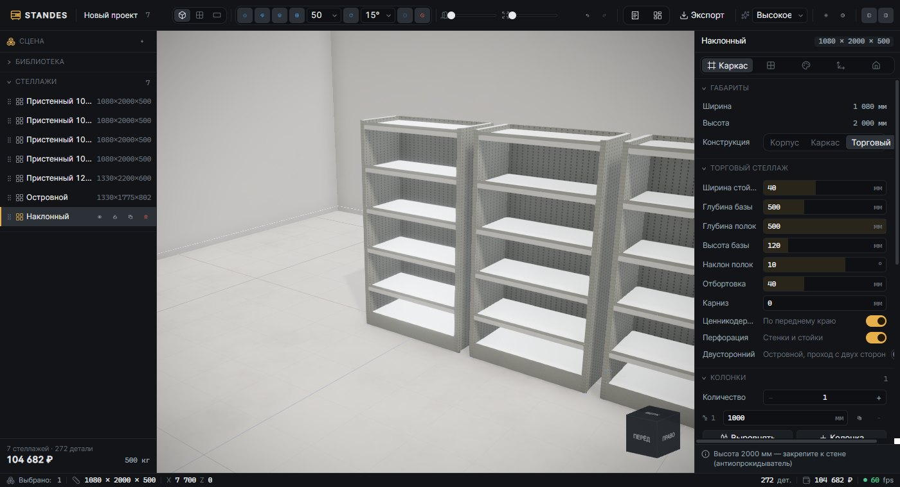
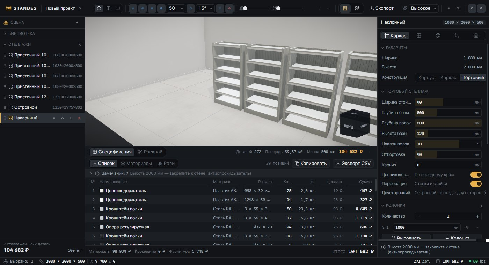
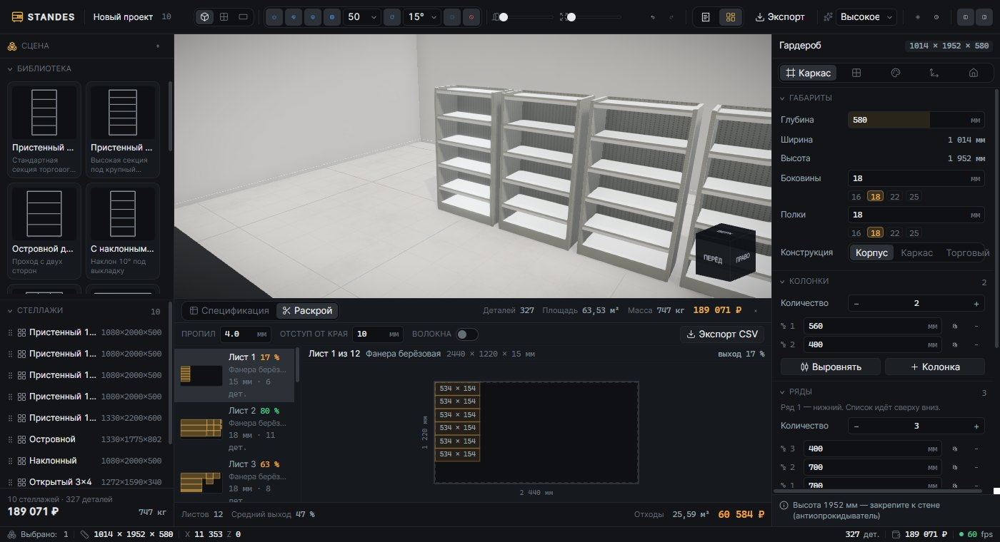

3D-конфигуратор · WebGL
2026
STANDES
Покупатель задаёт размер торгового зала, набирает секции из библиотеки и расставляет их мышью — стеллажи примагничиваются друг к другу гранями, углами и крышками. Пока он это делает, из той же геометрии считаются спецификация, масса, раскрой листа и цена.
- Роль
- единственный разработчик: домен, 3D-сцена, интерфейс, экспорт, обе локали
- Стек
- React 19 · TypeScript 5.9 · Vite 7 · three.js · React Three Fiber · zustand + immer + zundo · Tailwind 4
- Объём
- 25 548 строк TS/TSX в 71 файле, без единой внешней 3D-модели и текстуры
- Конструкции
- корпусный стеллаж (ЛДСП, фанера) · стальной каркас · торговое оборудование
- Версии
- две независимые сборки из одного исходника: русская в ₽, английская в $
- Статус
- рабочее демо, открыто в браузере; цены — каталог-заглушка под подстановку
01 · Задача
Торговое оборудование продаётся вслепую
Владелец магазина покупает стеллажи один раз на несколько лет и почти никогда не представляет результат. Он знает площадь зала и примерный бюджет; поставщик знает сортамент. Между ними — менеджер, который на словах собирает расстановку, считает её в таблице и присылает счёт. Ошибка в проходе на 200 мм или в высоте секции вскрывается на монтаже, когда металл уже нарезан.
Обычный «калькулятор стеллажа» эту проблему не решает: он считает одну секцию. Вопрос покупателя другой — сколько секций влезет в мой зал и как это будет выглядеть.
Отсюда два разных пользователя у одного инструмента. Покупателю нужны готовые секции, площадь зала в квадратных метрах и итоговая сумма — и ничего больше. Менеджеру поставщика нужны толщина стойки, шаг перфорации, наклон полки, масса секции, спецификация по позициям и выгрузка в CSV.
Поэтому у конфигуратора два режима на одной сцене: клиентский и менеджерский. Это не две сборки и не два набора данных — одна модель, два интерфейса поверх неё. Переключатель в правом верхнем углу.

02 · Как устроено
Одна размерная модель на сцену, смету и раскрой
Главное архитектурное решение принято в первый день: размеры считаются в одном
месте. Модуль domain/frame.ts знает, где находится каждая ячейка,
какая у детали эффективная толщина и на какой высоте стоит юнит. К нему обращаются
и разбор на детали, и магниты, и инспектор, и превью в библиотеке. Разойтись они
физически не могут — считать негде.
- Проект → юниты Проект — это комната и список стеллажей. Юнит описан не геометрией, а намерением: колонки, ряды, тип конструкции, материалы, содержимое ячеек. Ни одной координаты в модели нет.
-
Юнит → детали
geometry.tsразворачивает намерение в список деталей: 30 ролей от боковины и полки до перфорированной стойки, кронштейна, отбортовки и ценникодержателя. Каждая деталь несёт габарит, центр, материал и признаки — стекло, перфорация, кромка. - Детали → сцена Тот же список идёт в three.js. Материалы процедурные: шпон, металл, перфорация и плитка пола рисуются на канвасе при старте. Внешних текстур и моделей в проекте нет совсем — сборка не тянет ассеты.
-
Детали → смета
bom.tsсворачивает те же детали в позиции: площадь, длина кромки, масса по плотности материала, фурнитура, цена. Смета не «примерно соответствует» модели — она из неё и построена. -
Детали → раскрой
Листовые детали уходят в
cutlist.ts: упаковка MaxRects с гильотинным резом, учёт пропила и отступа от края, карта листа с выходом и отходами.
Единицы разведены жёстко: вся доменная модель в миллиметрах, сцена three.js —
в метрах, перевод только на границе рендера через одну функцию mm().
Это скучное правило, но именно оно избавляет от целого класса ошибок, где стеллаж
внезапно оказывается размером с дом.
03 · Трудная часть
Магниты, которые не спорят с пользователем
Примагничивание кажется простой задачей ровно до первой реализации. Наивный подход — перебрать соседей, найти ближайшую грань в пределах порога и притянуть — разваливается сразу: у стеллажа в углу зала одновременно валидны стык со стеной, стык с соседом и сетка, и пороговая логика выбирает не то, что имел в виду человек.
Кандидаты вместо порогов
Решатель не выбирает первый подходящий стык. Он строит все кандидаты шести типов — грань в грань, угол в угол, к стене, по сетке, доворот, установка сверху — и назначает каждому цену. Дальше сортировка по цене и первый, который никуда не врезается.
Цена, а не приоритет
Цена — это расстояние от точки под курсором плюс штраф за тип и за доворот.
Порядок получается сам собой: face 0 < stack 40 < corner 60 <
wall 120 < grid 400 < angle 500. Сетка — последний резерв, а не
конкурент нормальному стыку.
Родные стыки липнут охотнее
Совпадение высоты даёт −40 к цене, совпадение глубины — ещё −40. Секции одного типоразмера собираются в ряд почти сами, а стыковка разнокалиберных требует подвести курсор точнее. Именно так это выглядит на первом скриншоте: семь секций встали в линию без единой правки.
Доворот стоит денег
Стык грань-в-грань разрешает доворот до 50°, но каждый градус стоит 4 мм цены. Слегка повёрнутый стеллаж дотягивается до соседа и выравнивается; развёрнутый на 45° — нет, потому что это уже не «почти состыковано», а другое намерение.
Гравитация в том же проходе
Стеллажи ставятся друг на друга, и высота — не отдельный режим. Боковой стык несёт
текущую высоту юнита, stack — крышку соседа, а если в предложенной точке
под юнитом пусто, он падает на пол вместе с примагничиванием.
Висящих в воздухе секций не бывает.
Опора считается площадью
Верхний юнит держится, если перекрывает нижний хотя бы на 55 % меньшей из двух площадей. Это правило запрещает и «большое на маленькое», и стеллаж, стоящий уголком на краю соседа, — без отдельной проверки на каждый случай.
Стоимость решателя удерживают два приёма. Соседи грубо отсеиваются по описанным окружностям — для юнита, до которого магнит не дотянется, кандидаты вообще не строятся. И проверка на пересечение идёт по одному кандидату в порядке цены, с выходом на первом свободном, вместо честного «все против всех».
04 · Код
Четыре места, где решение видно целиком
const cands: SnapCandidate[] = [] if (settings.magnets) { for (const n of near) { faceMates(unit, n.u, settings, cands) cornerMates(unit, n, settings, cands) } } if (settings.stack) for (const n of near) stackMates(unit, n.u, settings, cands) if (settings.walls) wallSnaps(unit, room, settings, cands) if (settings.grid) cands.push(gridSnap(unit, settings)) // гравитация: боковой стык высоту не меняет, но если в новой точке под // юнитом пусто — он съезжает на пол вместе с примагничиванием if (myElev > 0) { for (const c of cands) { if (c.kind === 'stack') continue if (!supportedAt(unit, c.pos, c.rotY, myElev, near)) c.elevation = 0 } } if (!cands.length) return fall() cands.sort((a, b) => a.cost - b.cost) if (!settings.collide) return cands[0] for (const c of cands) if (!candidateHits(unit, myR, c, near)) return c return fall()
Двадцать строк, в которых лежит всё поведение магнитов. Обратите внимание на порядок: сначала строятся все варианты, потом применяется гравитация к каждому, и только потом идёт выбор. Если бы гравитация считалась после выбора, стеллаж сначала прилипал бы к соседу, а потом отдельным движением падал — два события вместо одного, и undo пришлось бы писать вручную.
function supportedAt(u, pos, rotY, elev, near): boolean { if (elev <= 0) return true // на полу — всегда const probe = moved(u, pos, rotY, elev) const myArea = footprintArea(u) for (const n of near) { // крышка соседа должна совпасть с низом юнита if (Math.abs(unitTopY(n.u) - elev) > SUPPORT_EPS) continue if (overlapArea(probe, n.u) >= Math.min(myArea, footprintArea(n.u)) * MIN_SUPPORT_RATIO) return true } return false }
Math.min здесь — вся суть. Если брать площадь верхнего юнита, маленькая
секция законно встанет уголком на край большой. Если нижнего — большая секция не встанет
на маленькую никогда, даже когда это осмысленно. Минимум из двух даёт правило, которое
совпадает с физической интуицией: меньший из двух должен опираться большей
частью себя. Пересечение считается по повёрнутым пятнам застройки, поэтому
правило работает и для секций под углом.
/** Ближайшая каталожная толщина, но ТОЛЬКО вниз: деталь не имеет права вылезти из своего гнезда. */ function buildableThickness(materialId: string, t: number): number { const list = getMaterial(materialId).thicknesses if (!list.length) return t let best = -Infinity for (const th of list) if (th <= t + 0.01 && th > best) best = th return Number.isFinite(best) ? best : t }
Пользователь задаёт толщину полки ползунком и легко ставит 18 мм там, где стекло бывает только 10. Округление «к ближайшему» дало бы 20 мм — и деталь перестала бы влезать в гнездо, а раскрой состоял бы из листов, которых не существует в продаже. Округление строго вниз ломает ожидание («я поставил 18, а стало 10»), зато результат всегда физически собираем. Ограничение показано в интерфейсе рядом с полем — доступные толщины материала стоят кнопками.
/** * postprocessing в EffectComposer.setRenderer ставит renderer.autoClear = false. * drei ContactShadows печёт тень обычным gl.render() — и без очистки буфера * каждый кадр дорисовывается ПОВЕРХ предыдущего. */ function AutoClearGuard() { const gl = useThree((s) => s.gl) useFrame(() => { if (!gl.autoClear) gl.autoClear = true }) return null }
Симптом выглядел как мистика: при перетаскивании стеллаж оставлял на полу мокрый след,
который исчезал, стоило отпустить кнопку. Ни в коде теней, ни в коде драга ошибки не было —
две библиотеки просто по-разному распоряжаются одним WebGLRenderer.
Сторож стоит до <ContactShadows>: useFrame
выполняется в порядке подписки, и флаг нужно вернуть раньше, чем тень начнёт рисоваться.
Тот же баг, найденный чуть позже, объяснил и «призрачные отпечатки» стеллажей на полу.
05 · Что получилось
Измерено на демо, которое открыто по ссылке
строк TypeScript в 71 файле: домен, сцена, интерфейс, экспорт, две локали
деталей в сцене из десяти стеллажей — сцена, смета и раскрой считаются с одного списка
при перетаскивании: позиции идут в отдельный слой, стор и смета на кадрах не трогаются
типов магнитов: грань, угол, стена, сетка, доворот, установка сверху
ролей деталей — от боковины и штанги до перфостойки, кронштейна и ценникодержателя
внешних 3D-моделей и текстур: вся графика процедурная, сборка не тянет ассеты



| Что считается | Откуда берётся | Куда уходит |
|---|---|---|
| Позиции спецификации | детали + материалы | экран, CSV, печатная форма |
| Масса | объём детали × плотность материала | смета, транспорт |
| Карта раскроя | листовые детали + формат листа | экран, CSV |
| Цена | площадь, кромка, метизы, прайс | клиентский итог и смета |
| Сцена | тот же список деталей | WebGL, GLB, PNG |
| Проект целиком | комната + юниты | JSON-файл, ссылка со сжатием |
Ни одна строка этой таблицы не пересчитывает геометрию заново — все шесть выходов построены на одном разборе юнита на детали.
06 · Две версии
Русская и английская — разные сайты, один исходник
Переключателя языка внутри приложения нет намеренно. Русская и английская версии —
это два адреса, две сборки и два независимых прайса. Курса валют в коде
нет вообще: цена материала описана парой { rub, usd }, и долларовое значение
правится под экспортный рынок, а не получается делением рублёвого.
const locale = (process.env.VITE_LOCALE ?? 'ru').toLowerCase() === 'en' ? 'en' : 'ru' return { base, define: { __STANDES_LOCALE__: JSON.stringify(locale), __STANDES_CURRENCY__: JSON.stringify(currency), }, build: { outDir: locale === 'en' ? 'dist-en' : 'dist' }, }
Первая попытка прокидывала язык через import.meta.env.VITE_LOCALE — и
английская сборка молча выходила русской. Vite собирает import.meta.env из
.env-файлов по своим правилам и подставляет его раньше
пользовательского define, так что переменная из окружения до рантайма не
доезжала. Собственное имя __STANDES_LOCALE__ не конфликтует ни с чем и
вырезается минификатором вместе с мёртвой веткой.
Один дефект этой схемы вскрылся уже после публикации, при подготовке этого разбора.
Обе версии лежат в подпапках одного домена (/standes/ и
/standes/en/), а значит делят один localStorage — английская
версия открывалась с проектом, собранным на русской. Ключи хранилища теперь разведены
по локали: standes:en:project против standes:ru:project.
07 · Что осталось за кадром
Границы демо
Это работающий инструмент, но не сданный продукт: у него нет заказчика, который проверил бы прайс и сортамент. Ниже — то, что честнее назвать вслух.
-
Цены — каталог-заглушка. Порядок величин взят с рынка, но конкретные числа
подставлены мной. Рублёвый и долларовый прайсы независимы, курса в коде нет;
перед реальным использованием оба заполняются из прайс-листа поставщика — это одна
таблица в
materials.tsи фурнитура вbom.ts. -
Заявка никуда не отправляется. Бэкенда у демо нет, и писать «мы вам перезвоним»
было бы враньём. Заявка складывается в
localStorageи копируется в буфер обмена готовым текстом — экран успеха говорит об этом прямо. - Средний выход раскроя 47 % на смешанном проекте. Это честная цифра упаковщика MaxRects с гильотинным резом на разнородных деталях, а не оптимум: настоящий раскройщик объединяет заказы и крутит детали. Направление волокон есть тумблером, но по умолчанию выключено — на реальном заказе результат стоит проверить глазами.
-
Спецификация экспортируется печатной страницей, а не PDF.
Ctrl+P→ «Сохранить как PDF». Библиотеки генерации PDF в проекте нет сознательно: она весит больше, чем весь остальной экспорт вместе взятый. - Автотестов нет. Геометрия и магниты проверялись отдельными скриптами: попарное пересечение объёмов всех деталей, опора ножек, соответствие толщин каталогу, арифметика привязок. Скрипты нашли больше, чем нашёл бы я глазами, — плинтус, вылезавший из базы, несуществующие толщины листа, ножки в воздухе, z-fighting полки о стойку, — но это разовые проверки, а не набор тестов, который защищает от регрессий.
- Сборка тяжёлая: 1,9 МБ основного чанка, 609 КБ в gzip. Это цена three.js с постобработкой. Разбито на чанки только то, что реально ленивое — GLB, PNG и печатная форма грузятся по требованию.
- Мобильных жестов нет. Интерфейс рассчитан на мышь и клавиатуру: перетаскивание с модификаторами, горячие клавиши, орбита колесом. На телефоне сцена откроется и будет вращаться, но собирать расстановку там неудобно.
Если продолжать, порядок такой: прайс и сортамент от живого поставщика, отправка заявки в CRM вместо буфера обмена, и набор фикстур на геометрию — те самые разовые скрипты, переписанные в тесты. Конфигуратор без настоящего прайса всегда выглядит рабочим на том проекте, на котором его собирали.